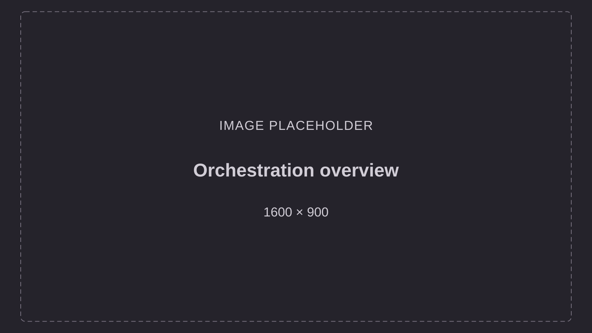

Experience layer
Sanctum, human review and visibility into the state of work.
SYSTEM DESIGN
A conceptual, model-independent architecture. Open any component to learn about its responsibilities.
Concept blueprintCONNECTED SYSTEM
SYSTEM BOUNDARIES
Sanctum, human review and visibility into the state of work.
Lucerna, task dependencies, worker selection and result synthesis.
Delver runtime, reusable Runes, tool adapters and authorization checks.
Cairn integration for persistent memory; artifacts and execution logs remain distinct.
This is a proposed architecture, not a deployed implementation. Enforcement, identity isolation, storage, model selection and reliability still require validation.
VISUAL REFERENCE
